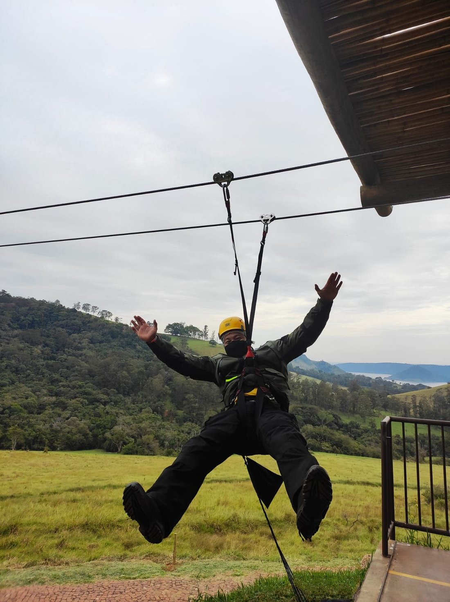

HomeﾠﾠRestauranteﾠﾠMídiaﾠﾠAtraçõesﾠﾠContato
A Estância Pedra do Índio é um dos principais atrativos turísticos do Norte do Paraná. Está localizada em Ribeirão Claro e às margens da Represa Chavantes. A estrutura de lazer & aventura conta com a maior tirolesa do estado do Paraná! Oferece também o safari aventura, passeios de lancha, banana boat, trilha, rapel, voos de parapente paratrike e uma área de camping!
Para agendar qualquer uma das atrações, favor entrar em contato conosco
